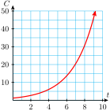

Example 1.1.1.
In 1985, there were about 1.2 million cell phone users world-wide. For some years after that time, the number grew by a factor of 1.5 each year.
- Let \(C(t)\) be the number of cell phone users \(t\) years after 1985 according to this model. Make a table of values and graph \(C(t)\text{.}\)
- Write a formula for \(C(t).\)
- How many cell phone users does this model predict for the year 2000?
- Do you think this model will be valid indefinitely? Why or why not?
Solution.
-
We let \(t=0\) in 1985, so \(C(0)=1.2\text{,}\) in millions. Each value of \(C(t)\) can be obtained by multiplying the previous value by the growth factor, 1.5.
\(\hphantom{0}t\hphantom{0}\) \(C(t)\) \(\) \(0\) \(1.2\) \(\) \(1\) \(1.8\) \(\blert{1.2\times 1.5 = 1.8}\) \(2\) \(2.7\) \(\blert{1.8\times 1.5 = 2.7}\) \(3\) \(4.05\) \(\blert{2.7\times 1.5 = 4.05}\) \(4\) \(6.08\) \(\blert{4.05\times 1.5 = 6.08}\) \(5\) \(9.1\) \(\blert{6.08\times 1.5 = 9.1}\) \(6\) \(13.7\) \(\blert{9.1\times 1.5 = 13.7}\) \(7\) \(20.5\) \(\blert{13.7\times 1.5 = 20.5}\)  - The initial value of the function is \(C_0 = C(0) = 1.2\) million. The annual growth factor is \(b=1.5\text{,}\) so the formula is\begin{equation*} C(t) = 1.2(1.5)^t \end{equation*}
- The year 2000 is 15 years after 1985, so we evaluate the function for \(t = \alert{15}\text{.}\)\begin{equation*} C(\alert{15}) = 1.2(1.5)^{\alert{15}} = 525.47 \end{equation*}The formula predicts that over 525 million people used cell phones in 2000.
- It is unlikely that the model will be valid indefinitely, because \(C(t)\) will eventually exceed the population of Earth.